Conheça o Coral-Sol
Uma espécie que vem causando problemas a diversidade marinha brasileira
O coral-sol(tubastrea spp) é uma espécie bioinvasora que veio parar aqui no Brasil.
No nosso país, existem duas espécies desses animais encontradas em quase todos os estados brasileiros.
Tubastrea tangusensis e Tubastrea coccínea vem tomando conta dos recifes de corais de ecossistemas marinhos,
apesar de parecer um belo jardim no fundo do oceano com as suas cores vibrantes em tons de vermelho, laranja e amarelo,
esses corais podem causar sérios problemas ambientais.
O coral sol se reproduz rapidamente ocupando novas áreas, e por não possuir predadores naturais aqui no Brasil,
esses animais encontram um ambiente propício para crescer descontroladamente, resultando numa competição com espécies brasileiras.
Os corais-sol competem lugares com corais nativos, competindo com eles espaços e recursos,
e produzindo substâncias químicas capazes de causar necrose em cnidários brasileiros.

Além disso, as espécies exóticas invasoras podem competir com espécies nativas por recursos alimentares, abrigo e espaço, reduzindo as populações de peixes e outros organismos marinhos de valor comercial. Isso pode levar a uma diminuição das capturas e impactar negativamente a renda e a subsistência dos pescadores locais.
O turismo também pode ser afetado pelas espécies invasoras de coral-sol, podendo diminuir negativamente a beleza e a biodiversidade de ecossistemas marinhos, diminuindo o interesse de turistas em visitar determinadas áreas.
Órgãos ambientais como o ICMBIO, IBAMA, Projeto coral sol e a Petrobras criam guias e cursos de conservação para a retirada desses corais presente no Brasil. Porém, somente pessoas autorizadas podem fazer retiradas desses corais, com isso, existem algumas formas de manejo mais simples para que os corais não se espalhem rapidamente como: limpeza dos cascos de embarcações e aplicação de sistemas anti-incrustantes para que os corais-sol não sejam capazes de se fixarem em barcos.

Caso encontre um coral-sol basta tirar fotos para ajudar na identificação, anote local, data e informações importantes, por último entre em contato com pessoas responsáveis para retirada desses corais. O Projeto coral-sol disponibiliza um e-mail denuncia@coralsol.org.br e o ICMBIO disponibiliza sites para contatos e página no Instagram: @icmbio_costasdoscorais.